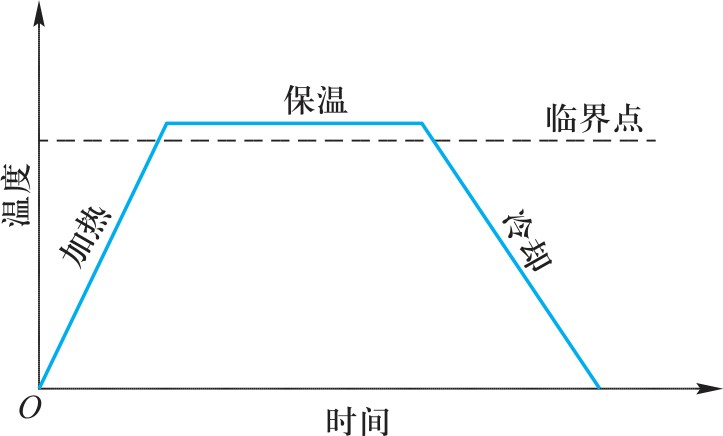
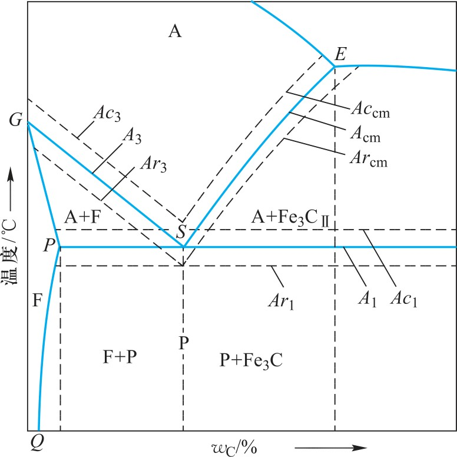
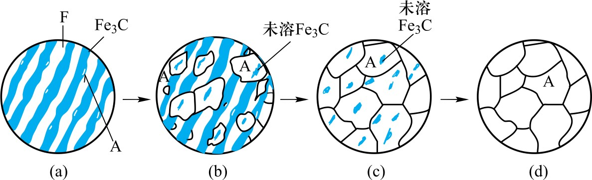
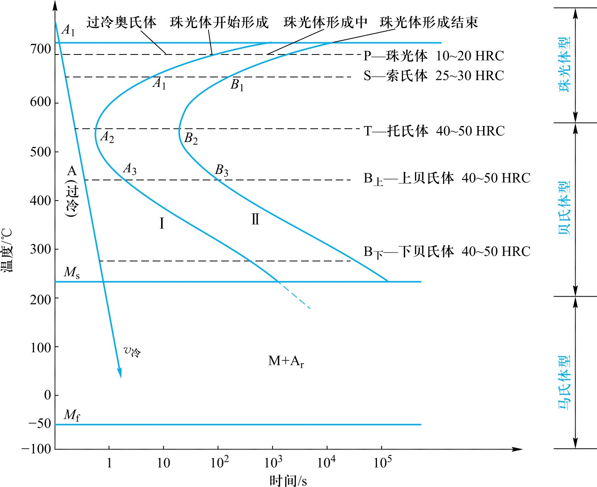
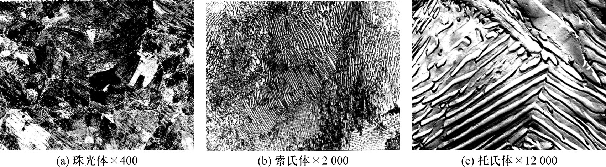
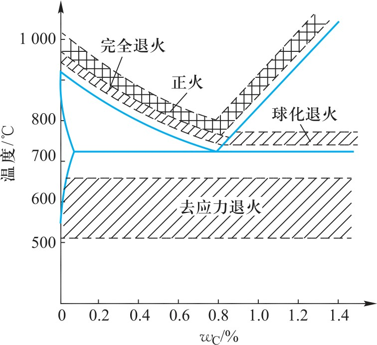
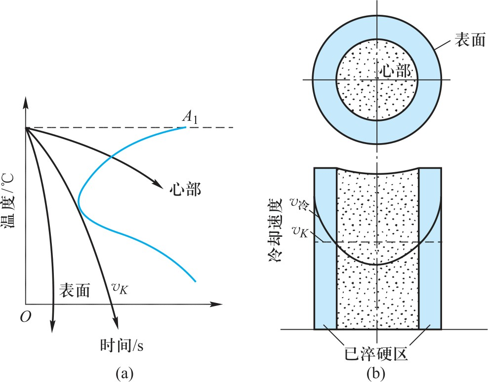

工程材料与机械制造基础（第3版）
Principles of Heat Treatment
01 / 热处理原理
热处理：通过加热、保温和冷却改变金属内部组织或表面组织，从而获得所需性能的工艺方法。
常用热处理工艺：退火、正火、淬火、回火、表面热处理。
热处理在机械制造中占有重要地位：机床设备中 60%~70% 的零部件需要热处理。

01 / 热处理原理
在 Fe-Fe₃C 相图中，A₁、A₃、Acm 线表示平衡临界温度。
实际加热/冷却存在过热和过冷现象：
| 符号 | 含义 |
|---|---|
| Ac₁、Ac₃、Accm | 实际加热时的临界温度 |
| Ar₁、Ar₃、Arcm | 实际冷却时的临界温度 |

01 / 热处理原理
把钢加热到 Ac₁ 线以上，使其内部组织转变成均匀的奥氏体 → 奥氏体化。
共析钢奥氏体的形成分四个阶段：
在铁素体
和渗碳体
界面上形核
奥氏体
晶核长大
剩余渗碳体
溶解
成分均匀

01 / 热处理原理
共析钢过冷奥氏体等温转变曲线——C 曲线（TTT 曲线），是制订热处理工艺的重要依据。

01 / 热处理原理
| 冷却速度 | 转变温度 | 组织 | 性能 |
|---|---|---|---|
| 缓慢 | ~700 °C | 珠光体（P） | 硬度较低 |
| 中等 | ~600 °C | 索氏体（S） | 综合性能好 |
| 较快 | ~550 °C | 托氏体（T） | 硬度较高 |
| 很快 | ~350~500 °C | 贝氏体（B） | 强韧性好 |
| 极快 | ~200~350 °C | 马氏体（M） | 硬度最高、脆性大 |

Common Heat Treatment Processes
02 / 普通热处理
加热→保温→炉冷
目的：降低硬度、消除内应力
细化组织、改善加工性
加热→保温→空冷
冷却速度比退火快
得到更细的珠光体组织

02 / 普通热处理
淬火：将钢加热到 Ac₃ 或 Ac₁ 以上，保温后快速冷却，获得马氏体组织的热处理工艺。
淬火的目的是获得马氏体，提高钢的硬度和耐磨性。
淬透性与淬硬性：
钢获得淬硬深度的能力
取决于临界冷却速度
钢淬火后能达到的硬度
取决于马氏体的碳含量

02 / 普通热处理
回火：淬火后将钢加热到 Ac₁ 以下某一温度，保温后冷却的热处理工艺。
| 类型 | 温度 | 组织 | 用途 |
|---|---|---|---|
| 低温回火 | 150~250 °C | 回火马氏体 | 刀具、模具、轴承 |
| 中温回火 | 250~500 °C | 贝氏体 | 弹簧、要求高弹性的零件 |
| 高温回火 | 500~650 °C | 索氏体 | 轴、齿轮、连杆（调质处理） |
淬火+高温回火 = 调质处理，广泛应用于重要机械零件。
Surface Heat Treatment & Modification
03 / 表面热处理
零件表面要求高硬度、高耐磨性，而心部保持塑性和韧性→表面淬火。
利用感应电流加热表面
加热速度快、效率高
用高温火焰加热表面
设备简单、适用性广
03 / 表面热处理
化学热处理：将工件放在活性介质中加热，使元素渗入表面层，改变表面化学成分和组织。
表面渗入碳原子
提高表面硬度
心部保持韧性
表面渗入氮原子
硬度更高、耐磨
耐腐蚀性提高
同时渗入C和N
综合性能好
处理温度较低
Summary
本章小结
① 热处理三要素：加热、保温、冷却，通过改变组织获得所需性能
② 奥氏体化四阶段：形核→长大→溶解→均匀化；奥氏体晶粒控温是关键
③ C 曲线（TTT 曲线）：冷却速度决定转变产物（P、S、T、B、M）
④ 退火（炉冷）、正火（空冷）、淬火（快冷→马氏体）、回火（消除应力、调整性能）
⑤ 调质 = 淬火 + 高温回火，得到良好综合力学性能
⑥ 表面淬火：感应加热/火焰加热；化学热处理：渗碳/渗氮/碳氮共渗